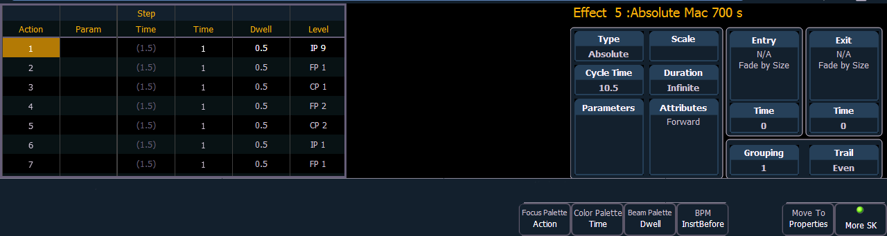

Absolute effects are a listing of sequential actions that channels are to take. They differ from step effects in that there is no on/ off state, rather they define progressive behavior from one action, to the next, to the next, and so on. The best example of this is that palettes and presets can be used as actions in absolute effects.
Absolute effects differ from relative effects (which are also progressive) in that you are specifying exactly what actions you want the lights to take, rather than mathematical offsets from the current state (relative effects).
Absolute effects also do not contain an embedded channel list. Therefore, the effect must be applied to channels in order to be played back.
Absolute effects are displayed in a chart with the following columns:

In the above image, actions 1 through 7 indicate referenced values in the “Level” column (palettes or presets), though these values can be absolute data as well.
If an effect action is on the command line or indicated in the blue text to the left of the command line, entering a number on the command line will default to selecting a action for the previous selected effect.
If no action is displayed, the command line will default to an effect number.
Default step times will display in gray and in parentheses, and assigned step times will display in white without parentheses.
Note: The default step time is the time value plus the dwell value.
If no step time has been assigned, the action will begin once the fade and dwell times for the previous action have completed. If a step time has been assigned, the next action will begin after that set amount of time has elapsed.
You can also define specific parameters for Absolute effect actions. To apply a parameter to a specific action, click in the Param column and select the desired parameter.